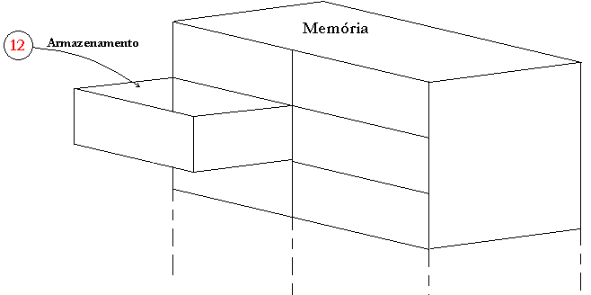
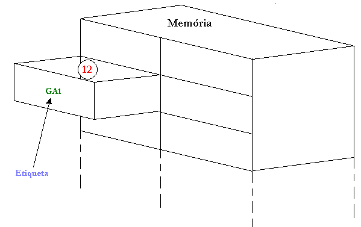

Variáveis de Memória
Até agora utilizamos nos nossos fluxogramas a seguinte linguagem: "atribuímos à(s) letra(s) o(s) valor(es) x (e y)"; a partir de agora esta expressão será alterada para uma linguagem mais técnica e completa.
Quando digitamos alguma informação, efetuamos cálculos, lemos uma informação do disco rígido, etc. estamos guardando estas informações na memória do computador, porém se não soubermos em que local esta informação está, não teremos como manipulá-la; por isto marcamos está posição com uma espécie de etiqueta virtual que chamamos de variável de memória.
Por isto, de agora em diante, a expressão anterior passará ser escrita da seguinte maneira: "atribuímos à(s) variável(is) o(s) valor(es) x (e y)".
Mas será que esta mudança se terminologia é somente para ficarmos com algo mais pomposo? Claro que não! Para entendermos o porque desta terminologia veremos graficamente como as informações são armazenadas na memória do computador.
- A memória de um computador pode ser entendida como um grande gaveteiro, onde cada informação é armazenada em uma gaveta:

- Para sabermos em que gaveta guardamos determinada informação, colocamos nela uma etiqueta única(pois se houver outra igual teremos duas gavetas com o mesmo nome e que podem ter conteúdos diferentes); a esta "etiqueta" que indica a posição(endereço) da memória é que chamamos de variável de memória ou simplesmente variável.

- Para ter acesso a uma informação basta então dizer o nome da gaveta, ou seja, a variável:
Escreva GA1
(significa: escreva o conteúdo da memória que está no endereço de memória rotulado como GA1, no nosso exemplo é o número 12.)
- Se quisermos armazenar(guardar) alguma coisa na memória através da digitação, leitura de um registro em disco etc:
Leia GA1
(significa: leia um valor através de algum dispositivo de entrada e guarde-o na posição de memória rotulado como GA1)
Conclusão: Uma variável não é somente uma letra, ela indica em que lugar da memória a informação foi guardada.
Exemplo Prático:
Digita-se dois valores e guarda-os nas variáveis a e b:
leia a
leia b
Efetua-se a soma e guarda-a em um variável chamada soma:
soma ¬ a + b
Para escrever a soma no monitor indicamos a posição da memória que tem esta informação, ou seja, a variável soma:
Escreva soma
Analise os fluxogramas que estudamos anteriormente e observe que utilizamos variáveis o tempo todo, por isto fazia-se necessária esta explicação.
Veremos adiante mais dois exemplos de fluxogramas e em seguida aprenderemos a construir o código de um programa a partir da sua lógica gráfica(fluxograma).

| Página Anterior | Próxima Página |